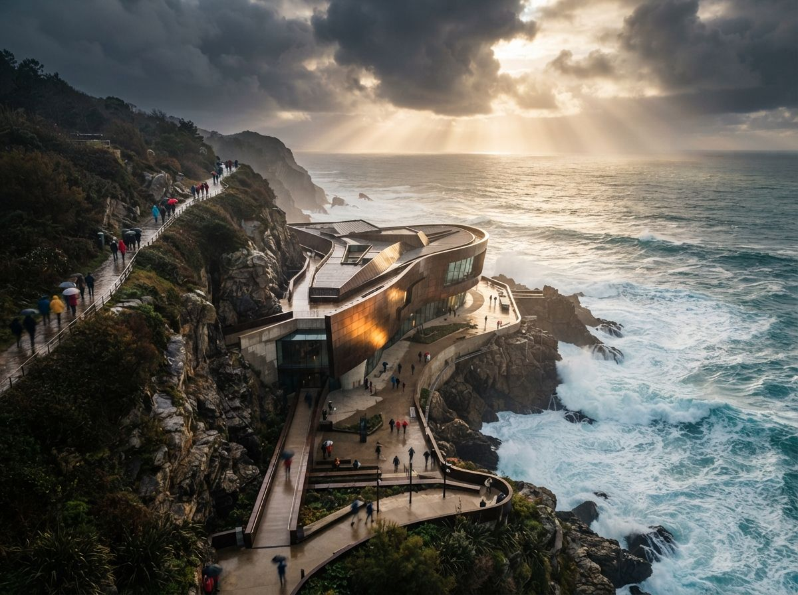

Read the two threads side by side and the pattern is obvious once you see it. One, on r/comfyui, is a flat complaint: render architectural models, but ComfyUI changes the geometry a lot, is there any way to keep the original geometry. The other describes the actual pipeline behind that complaint: most of the early design stages are done for close to free in SketchUp or a blockout tool, and reaching for Vray, Lumion or Twinmotion at that stage takes too much setup for a massing study nobody has approved yet. So the instinct is to skip straight to ComfyUI on the raw export. That instinct is correct. The execution is where the building disappears.
Why the enhance-pass advice doesn't reach this problem
Nearly every geometry-drift guide on the internet, including some of ours, assumes you are starting from a photo. A finished render already has correct materials, a plausible light direction, real shadow falloff, and edges a control net can lock onto with confidence. The job at that stage is narrow: hold the composition, change the light or the finish. Low denoise plus a depth and line pass is enough, because the source image is already doing most of the work of describing the building.
A bare viewport export has none of that. SketchUp's default shaded view gives you flat grey volumes, hard aliased edges, and zero material information. A Twinmotion blockout capture is closer to real but still carries placeholder glass, no bounce light, and stand-in landscaping. Ask a diffusion model to turn either one into a photoreal render at any meaningful denoise, and it is not polishing an existing scene. It is authoring an entire building from a sketch, which is precisely the job diffusion models are best at and precisely why your massing does not survive.
The control you're missing isn't denoise
Turning the denoise slider down does not save you here the way it does on a finished photo. Push denoise low enough to protect a flat grey box, and you get a flat grey box back with a slight photographic grain. The model has nothing to elaborate from, because a viewport export carries no lighting or material cues for it to lean on. You need it to add all of that. The lever that actually matters is which controls you feed it before generation, not how gently you let it run.
A single control net, the way most beginner ComfyUI graphs are set up, is not enough for this source. A lone canny pass on a SketchUp export locks the outline of every edge, including the vector-line artifacts and shadow break lines the software draws for legibility, not because they are real. The model then treats those artifacts as architecture and renders them as mullions, seams or trim that do not exist on your model. This is the exact failure the Facebook thread describes: the geometry changes a lot, because the one control in play is locking onto the wrong lines along with the right ones.
A flat viewport export gives a model almost nothing to hold onto. Stack three weak signals and it holds. One strong-looking signal, alone, is not enough.
The stack that holds a blockout model
Three controls, run together, do what one cannot. Depth first, extracted directly from the 3D software if it can export a depth pass, or approximated from the viewport if not: this carries volume and holds massing even where line work is ambiguous. A soft-edge or HED pass second, instead of canny: it reads structure without locking onto every construction line the export happens to draw. Normal maps third, where the source software supports them: they hold facade orientation and window planes, the exact geometry a flat shaded view otherwise loses. Canny alone is the wrong tool for this source. Depth plus soft edge plus normals, weighted so no single one dominates, is what a blockout model actually needs.
Add an IPAdapter reference image for material only, a photo of the brick, glass or cladding you intend, kept deliberately separate from the geometry controls. This is what answers the SketchUp thread's real ask: styled render, without design decisions the model makes on its own. Material comes from the reference. Massing comes from the control stack. Neither one is allowed to answer for the other, which is the discipline missing from most single-control tutorials.
| Control | Job | Weight |
|---|---|---|
| Depth | Holds volume and massing | Strong |
| Soft edge / HED | Reads structure, ignores CAD line noise | Medium |
| Normal map | Holds facade orientation, window planes | Medium |
| IPAdapter (material ref) | Supplies finish only, never geometry | Low, isolated |
| Canny | Skip on raw viewport exports | Off |

Export cleaner, and the whole stack gets easier
Half of this problem is solvable before ComfyUI even opens. A SketchUp export set to a matte, evenly lit shaded style, with construction lines and dimension strings hidden, gives depth and normal passes something honest to read. A Twinmotion capture set to a flat neutral lighting preset, rather than its default dramatic sky, removes false shadow edges that a control net would otherwise mistake for structure. Five minutes of export hygiene on the source side removes more geometry drift than any setting change downstream, because it stops feeding the model artifacts that were never part of the building.
Our take
Both threads are describing the same gap: every popular ComfyUI tutorial assumes you already have a good photo, and the actual bottleneck for most firms is one stage earlier than that, turning a cheap blockout model into something a client can react to. The fix is not a gentler slider. It is treating a flat viewport export as the weak, ambiguous source it is, and compensating with three controls instead of one, plus a material reference that is never allowed to touch the geometry. Do that once and the massing study you spent an afternoon on survives the render. Skip it, and you are reviewing a building your software never actually modeled.
Written from the 1 August 2026 intel sweep, which surfaced an r/comfyui thread asking how to render architectural models without ComfyUI changing the geometry, and a companion r/comfyui thread on rendering early-stage blockout models without the setup cost of Vray, Lumion or Twinmotion. Node names and weights are starting points for your own graph and vary by ControlNet build. ArchiGen AI carries no sponsored placements.